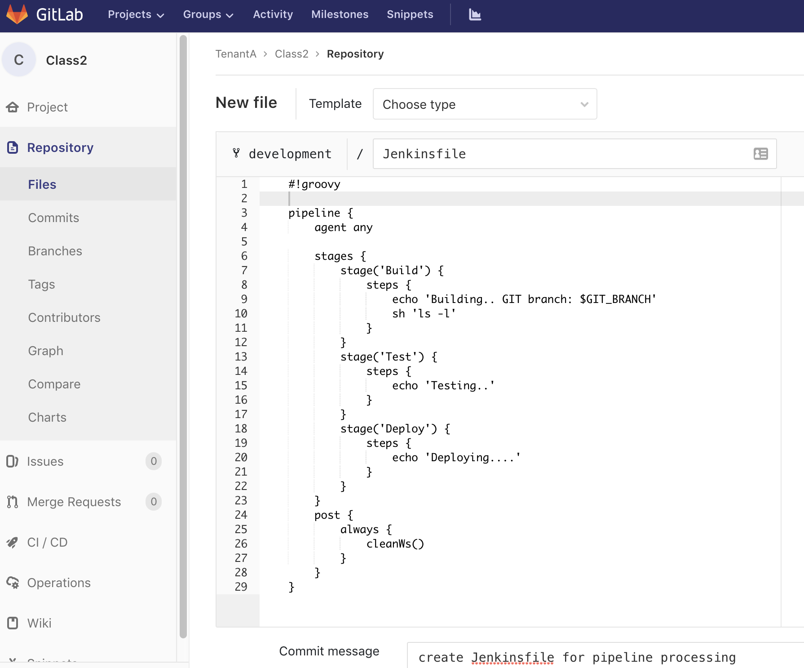
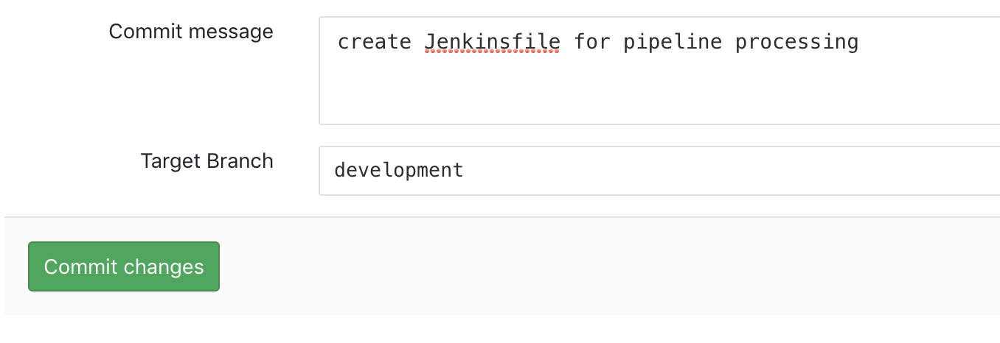
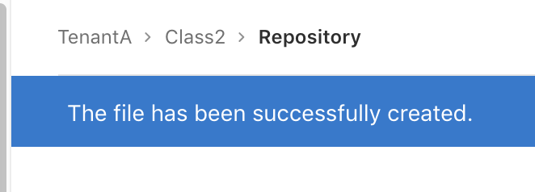
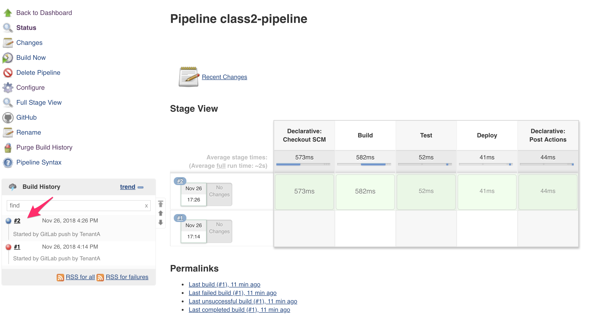
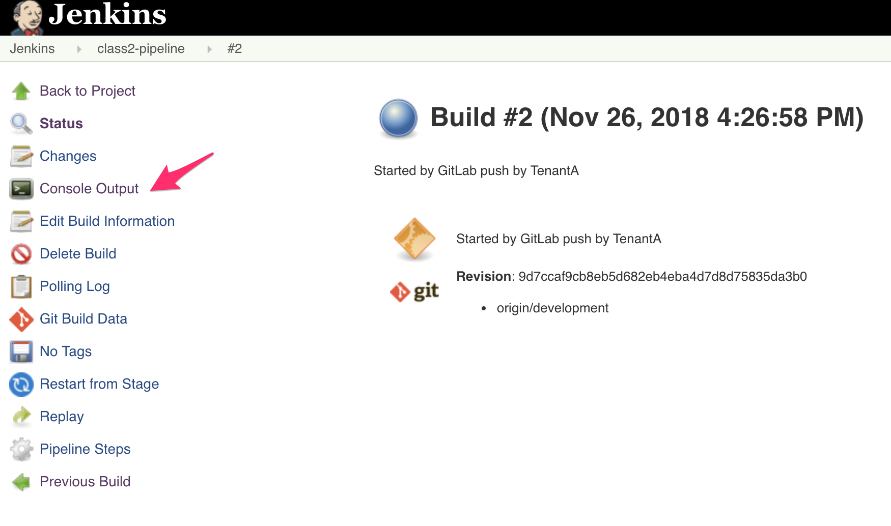

Setup the Jenkinsfile¶
In this lab, we will create the relevant Jenkinsfile. To learn more about Jenkinsfile, don’t hesitate to check this link: Jenkinsfile.
Create the Jenkinsfile¶
Connect to your GitLab GUI and go into your Class2 project/repository.
Note
it may be a good practice for you to try to do the same in CLI.
Select your development branch. Click on the + sign and select New file.
File Name: Jenkinsfile
in the text section, copy/paste the following:
#!groovy pipeline { agent any stages { stage('Build') { steps { echo 'Building.. ' sh 'echo GIT branch is $GIT_BRANCH' sh 'ls -l' } } stage('Test') { steps { echo 'Testing..' } } stage('Deploy') { steps { echo 'Deploying....' } } } post { always { cleanWs() } } }
Specify a Commit message, validate that you’re on the development branch and click on the Commit changes button.

{kind=link}
{kind=link}
You should see a blue banner to confirm the file creation
{kind=link}
Since we have “pushed” a change in our repo, our Jenkins pipeline has been triggered. Go back to the Jenkins GUI to see what happened. You should see the following in your class2-pipeline pipeline:
{kind=link}
Here we can see that the build is successful since we got a “green” line. We can see the different stages that were listed in our Jenkinsfile ! Build, Test, Deploy.
If you want to know more, click on the build number on the bottom left.
{kind=link}
Here you’ll see the different stages of your pipeline execution.
Jenkins is notified by the WebHook and retrieved the Jenkinsfile
Started by GitLab push by TenantA
[Office365connector] No webhooks to notify
Obtained Jenkinsfile from git http://172.18.0.2/TenantA/Class2
Running in Durability level: MAX_SURVIVABILITY
[Pipeline] node
Running on Jenkins in /var/jenkins_home/workspace/class2-pipeline
Then it starts to execute our Jenkinsfile. You can follow the processing of our file through the light grey text. the dark grey text is the output of what is executed.
We specified in our pipeline configuration that we wanted to checkout the SCM so it retrieves the developement branch of our repo
[Pipeline] { (Declarative: Checkout SCM)
[Pipeline] checkout
Cloning the remote Git repository
Cloning repository http://172.18.0.2/TenantA/Class2
> git init /var/jenkins_home/workspace/class2-pipeline # timeout=10
Fetching upstream changes from http://172.18.0.2/TenantA/Class2
> git --version # timeout=10
using GIT_ASKPASS to set credentials Gitlab user for TenantA
> git fetch --tags --progress http://172.18.0.2/TenantA/Class2 +refs/heads/*:refs/remotes/origin/*
> git config remote.origin.url http://172.18.0.2/TenantA/Class2 # timeout=10
> git config --add remote.origin.fetch +refs/heads/*:refs/remotes/origin/* # timeout=10
> git config remote.origin.url http://172.18.0.2/TenantA/Class2 # timeout=10
Fetching upstream changes from http://172.18.0.2/TenantA/Class2
using GIT_ASKPASS to set credentials Gitlab user for TenantA
> git fetch --tags --progress http://172.18.0.2/TenantA/Class2 +refs/heads/*:refs/remotes/origin/*
skipping resolution of commit 9d7ccaf9cb8eb5d682eb4eba4d7d8d75835da3b0, since it originates from another repository
> git rev-parse origin/development^{commit} # timeout=10
Checking out Revision 9d7ccaf9cb8eb5d682eb4eba4d7d8d75835da3b0 (origin/development)
> git config core.sparsecheckout # timeout=10
> git checkout -f 9d7ccaf9cb8eb5d682eb4eba4d7d8d75835da3b0
Commit message: "Create Jenkinsfile for pipeline processing"
First time build. Skipping changelog.
then we start executing the content of our Jenkinsfile:
stage('Build') {
steps {
echo 'Building.. '
sh 'echo GIT branch is $GIT_BRANCH'
sh 'ls -l'
}
This is one of the stage we saw in the previous page (one of the green box). Here we mostly create some ouput for tracing purposes, highlight which branch we retrieved and then list the content of the directory where we are.
this is the output of this in our console
[Pipeline] echo
Building..
[Pipeline] sh
[class2-pipeline] Running shell script
+ echo GIT branch is origin/development
GIT branch is origin/development
[Pipeline] sh
[class2-pipeline] Running shell script
+ ls -l
total 12
-rw-r--r-- 1 jenkins jenkins 15 Nov 26 16:26 GitRocks
-rw-r--r-- 1 jenkins jenkins 517 Nov 26 16:26 Jenkinsfile
-rw-r--r-- 1 jenkins jenkins 63 Nov 26 16:26 README.md
You can see that we retrieved our repository but also got placed in our repository automatically.
This is the logic of the Jenkinsfile. If you want to see more examples of Jenkinsfile, don’t hesitate to check the files in our ADC-Services and my-webapp-ci-cd-demo repositories
{kind=link}
{kind=link}